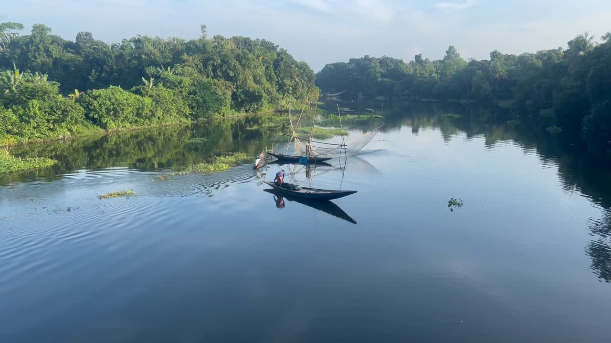

Defesa de direitos
Representar os interesses do povo Xikrin do Cateté e defender seus direitos junto a instituições públicas e privadas.
 Porekrô
Porekrô

Desde 2007
Uma associação do povo Xikrin do Cateté, dedicada à defesa de direitos e ao futuro coletivo de nossa comunidade.
Conheça nossa atuaçãoAldeia Xikrin do Cateté · Pará
A Associação Indígena Porekrô de Defesa do Povo Xikrin do Cateté é uma organização civil sem fins econômicos, fundada para congregar e representar os integrantes do povo Xikrin do Cateté.
Atuamos na defesa de direitos, no fortalecimento cultural e na construção de caminhos sustentáveis para as próximas gerações.
Território
Cultura
Direitos
Futuro
Representar os interesses do povo Xikrin do Cateté e defender seus direitos junto a instituições públicas e privadas.
Valorizar a cultura indígena e fortalecer iniciativas sociais, culturais, educacionais e tecnológicas da comunidade.
Promover atividades que respeitem o território, os recursos naturais e o bem-estar das gerações atuais e futuras.
Construir intercâmbios, convênios e ações com organizações que contribuam para os objetivos coletivos do povo Xikrin.
Uma composição que reúne lideranças tradicionais, representantes de jovens e guerreiros, diretoria e equipe da associação.
Grupo
Grupo
Comunidade
Associação
Território e atuação
Sede administrativa